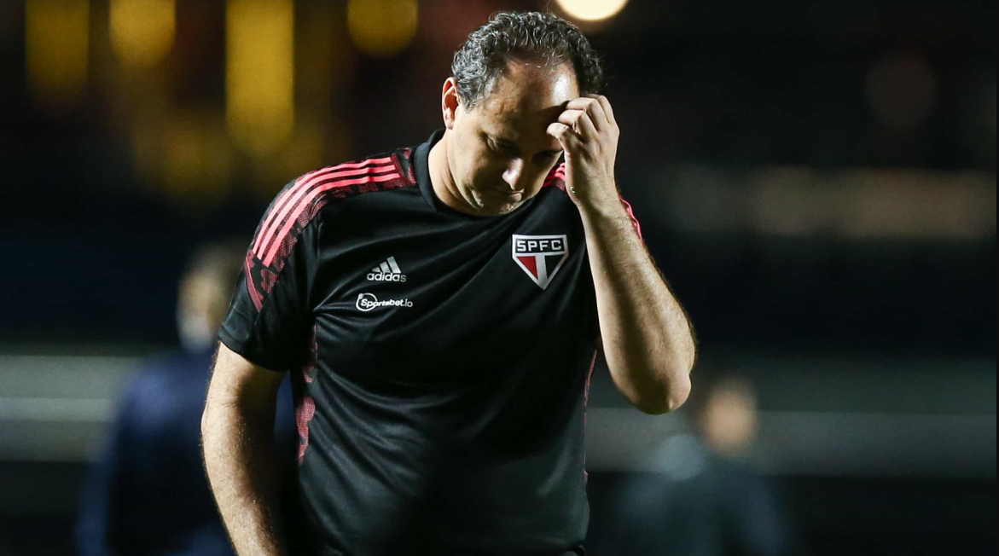

Esporte
um dos cartões postais da cidade, o parque dispõem de mais de 1,5km² de área verde, lagos artificias e pistas de cooper e ciclismo. e se isso não fosse o suficiente, o parque costuma ser palco de diversos eventos culturais ao longo do ano.